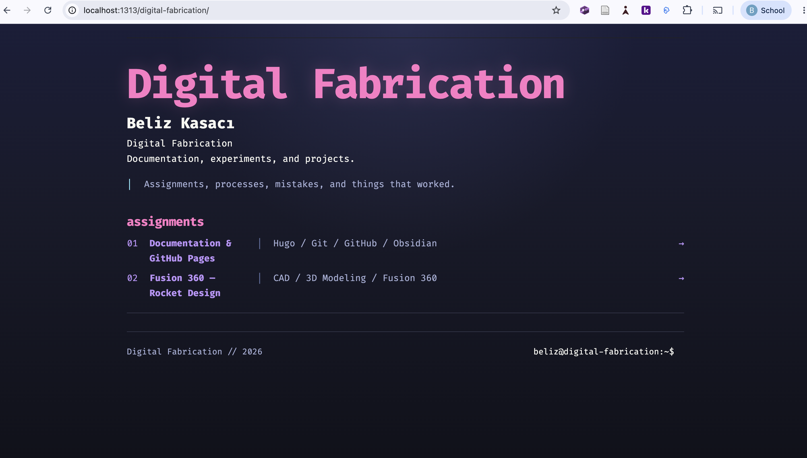

Week 1
Fusion 360 — Rocket Design
Assignment 1 — Documentation Website
Goal
The goal of this assignment was to create a website where I can document my work throughout the Digital Fabrication course. I wanted the website to be simple to update, so I chose Hugo to build it and GitHub Pages to publish it online.
Setting Up the Website
I used Hugo as the static site generator for my documentation website. I first created a folder for the project and then created a new Hugo site from Terminal.
cd ~/Desktop
mkdir FabAcademy
cd FabAcademy
hugo new site mywebsite
After creating the site, I opened the project folder and started customizing it instead of using the default Hugo appearance.
Adding the Theme
I used the Blowfish theme as a starting point. I added it to the project as a Git submodule:
git init
git submodule add -b main https://github.com/nunocoracao/blowfish.git themes/blowfish
I then copied the theme configuration files into my own project so I could change them without editing the original theme files directly.
mkdir -p config/_default
cp themes/blowfish/config/_default/*.toml config/_default/
I changed the site title, navigation, colors, typography, and homepage layout to make the website feel more like a personal documentation site rather than keeping the default theme design.
Previewing the Website
While working on the website, I used Hugo’s local server to check my changes before publishing them.
hugo server
This gave me a local version of the website at http://localhost:1313/. I kept this open while changing the layout and content so I could see the results immediately.
Setting Up Git and GitHub
After the website was working locally, I created a GitHub repository called digital-fabrication. I used Git to keep track of my changes and connected my local Hugo project to the GitHub repository.
I also set up an SSH key on my computer so I could push changes to GitHub from Terminal.
After connecting the repository, I pushed the project to GitHub:
git add .
git commit -m "Update website"
git push
I use the same three commands whenever I want to publish new changes to my documentation.
Publishing with GitHub Pages
Once the project was on GitHub, I used GitHub Pages to make the website public. Since the site is built with Hugo, I used a GitHub Actions workflow to build and deploy it automatically.
I set the Pages source to GitHub Actions and added a Hugo workflow inside .github/workflows/hugo.yaml.
Now, whenever I push a change to the main branch, GitHub Actions rebuilds the Hugo site and updates the published website automatically.
Problems I Ran Into
One problem I had was a 404 error when I first created the Week 1 page. The Markdown file had incomplete front matter, so Hugo was not recognizing the page correctly. I fixed it by making sure the page started and ended its front matter with ---.
For example:
---
title: "Week 1"
description: "Documentation"
---
Another problem appeared after I published the website. The View documentation link worked on localhost but did not work on GitHub Pages.
I originally wrote the link as:
<a href="/week-1/">View documentation</a>
The / at the beginning made the link start from the root of the GitHub Pages domain instead of my digital-fabrication site. I changed it to a relative link:
<a href="week-1/">View documentation</a>
After pushing the change to GitHub and letting GitHub Actions rebuild the site, the link worked on the published version as well.
Changing the Theme
I initially used the Blowfish theme, but after customizing it for a while, I decided to switch to the Rewired theme because I preferred its layout and visual style.
I added Rewired as another Git submodule:
git submodule add https://github.com/RigleGit/rewired.git themes/rewired
I then changed the Hugo configuration to use Rewired and customized the homepage to show my assignments directly.
While changing themes, I noticed that some of the old Blowfish configuration files were still affecting the website. For example, an extra language selector appeared in the top right corner. I removed the old Blowfish configuration files and adjusted the Rewired navigation, which fixed the problem.
Using Obsidian
I opened the mywebsite folder as an Obsidian vault and used it to write my documentation. Since Obsidian edits Markdown files directly, I can work on the same files that Hugo uses for the website.
For example, this page is stored in:
content/week-1/index.md
This means I can write in Obsidian, preview the result locally with Hugo, and then push the changes to GitHub.
Result

Final version of the documentation website running locally with Hugo.
The final result is a documentation website that I can continue updating throughout the course.
My workflow is:
Obsidian → Hugo → Git → GitHub → GitHub Pages
I write the documentation in Obsidian, preview the website locally with Hugo, and push the changes to GitHub. GitHub Actions then rebuilds and publishes the updated website automatically.